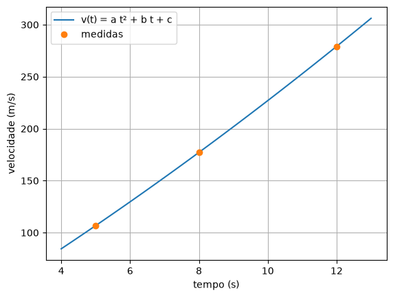

9. Do problema ao sistema¶
Nos capítulos 7 e 8, os
sistemas chegavam prontos: a matriz do circuito, a da dieta, a da placa aquecida.
Resolver é a parte que o computador faz bem, com a eliminação de Gauss, com
Gauss-Seidel ou numa linha de np.linalg.solve. A parte difícil, que nenhuma
biblioteca faz por você, é a que vem antes: montar o sistema, lendo um problema
escrito em português e transformando-o numa tabela de números.
O preço de cada fruta numa nota fiscal, a quantidade de cada peça que uma fábrica deve produzir, a corrente em cada malha de um circuito, a tração em cada cabo que segura um semáforo: todos viram \(A\,x = b\). Este capítulo é sobre essa tradução.
Uma receita em quatro passos¶
🌍 Contexto: a nota fiscal sem os preços
Você fez três compras na mesma feira, e a nota de cada uma só mostra o total. Compra 1: 2 kg de maçã, 1 de banana e 3 de laranja, por R$ 14,00. Compra 2: 1 kg de maçã, 3 de banana e 2 de laranja, por R$ 13,50. Compra 3: 3 kg de maçã, 2 de banana e 1 de laranja, por R$ 11,50. Quanto custa o quilo de cada fruta?
Passo 1: dê nome às incógnitas, com a unidade. \(x_0\) = preço do kg da maçã, \(x_1\) = da banana, \(x_2\) = da laranja, em R$/kg. Escreva isso antes de qualquer conta: metade dos erros de montagem é esquecer o que cada letra significa.
Passo 2: cada informação vira uma equação. Cada compra diz "a soma do que comprei é o total":
São 3 incógnitas, então são precisas 3 informações independentes.
Passo 3: arrume. As incógnitas ficam sempre na mesma ordem, uma por coluna. Um termo que falta aparece como zero, e tudo o que não multiplica uma incógnita passa para a direita. Os números da esquerda formam a matriz \(A\), os da direita formam o vetor \(b\), e o sistema se escreve \(A\,x = b\).
Lembrete do capítulo 7: a
matriz é um array de duas dimensões, criado com uma lista de linhas, e A[i, j] é
o elemento da linha i, coluna j.
Passo 4: resolva e confira no problema.
np.linalg.solve(A, b), do capítulo 7,
resolve o sistema. E A @ x refaz o lado esquerdo com a resposta: para cada linha,
multiplica os números da linha pelos de \(x\) e soma. Por isso tem de dar b de volta.
# Tres compras na mesma feira, e a nota so mostra o total. Quanto custa o kg de
# cada fruta? x[0] = maca, x[1] = banana, x[2] = laranja (R$ por kg).
# compra 1: 2 kg de maca + 1 de banana + 3 de laranja = R$ 14,00
# compra 2: 1 kg de maca + 3 de banana + 2 de laranja = R$ 13,50
# compra 3: 3 kg de maca + 2 de banana + 1 de laranja = R$ 11,50
import numpy as np
A = np.array([[2.0, 1.0, 3.0], # uma linha por compra
[1.0, 3.0, 2.0], # uma coluna por fruta
[3.0, 2.0, 1.0]])
b = np.array([14.0, 13.5, 11.5]) # o total de cada compra
x = np.linalg.solve(A, b)
print("preco por kg (maca, banana, laranja):", x)
print("A @ x =", A @ x, " (tem de dar os totais)")
Maçã a R$ 1,50, banana a R$ 2,00 e laranja a R$ 3,00 o quilo. O A @ x refaz
as três notas. Mas a conferência que importa é a do problema: preços positivos,
na faixa de preço de uma feira. Se a resposta fosse "a banana custa −R$ 4,00", o
sistema estaria certo e a montagem, errada.
No quadro: da tabela à matriz¶
🌍 Contexto: planejar a produção
Uma fábrica faz três peças, P1, P2 e P3, em três máquinas. Cada peça gasta um tempo em cada máquina, e o planejamento do mês quer usar todas as horas de todas as máquinas, sem ociosidade e sem hora extra.
| horas por peça | P1 | P2 | P3 | horas no mês |
|---|---|---|---|---|
| máquina M1 | 2 | 4 | 1 | 100 |
| máquina M2 | 3 | 2 | 4 | 140 |
| máquina M3 | 1 | 2 | 3 | 100 |
🧑🏫 No quadro — o que é linha e o que é coluna
1. As colunas são as incógnitas: uma por peça, \(x_0, x_1, x_2\) unidades de P1, P2 e P3.
2. As linhas são as informações: uma por máquina. A máquina M1 gasta \(2x_0\) horas com as peças P1, \(4x_1\) com as P2 e \(x_2\) com as P3, e o total tem de ser 100: \(2x_0 + 4x_1 + 1x_2 = 100\).
3. Nesta tabela, a matriz já está pronta: as linhas da tabela são as máquinas, as colunas são as peças. Nem sempre é assim. O teste é perguntar "cada linha é uma equação?": uma linha de \(A\) é uma soma que dá um número de \(b\).
4. O erro clássico é transpor: montar as linhas pelas peças e as colunas
pelas máquinas. O sistema continua tendo 3 equações e 3 incógnitas, o solve
responde sem reclamar, e a resposta não tem nada a ver com o problema.
# Uma fabrica faz tres pecas, P1, P2 e P3, em tres maquinas. Cada peca gasta
# um tempo em cada maquina, e o mes tem de usar todas as horas de todas elas.
#
# horas por peca | P1 P2 P3 | horas no mes
# maquina M1 | 2 4 1 | 100
# maquina M2 | 3 2 4 | 140
# maquina M3 | 1 2 3 | 100
import numpy as np
A = np.array([[2.0, 4.0, 1.0], # a tabela ja e a matriz: uma linha por maquina,
[3.0, 2.0, 4.0], # uma coluna por peca
[1.0, 2.0, 3.0]])
b = np.array([100.0, 140.0, 100.0])
pecas = np.linalg.solve(A, b)
print("pecas (P1, P2, P3):", pecas)
print("horas usadas:", A @ pecas)
# O erro classico: montar a matriz com as linhas trocadas pelas colunas.
A_errada = np.array([[2.0, 3.0, 1.0],
[4.0, 2.0, 2.0],
[1.0, 4.0, 3.0]])
errado = np.linalg.solve(A_errada, b)
print("com a tabela 'deitada':", np.round(errado, 2))
print("horas que isso usaria de verdade:", np.round(A @ errado, 1))
pecas (P1, P2, P3): [10. 15. 20.]
horas usadas: [100. 140. 100.]
com a tabela 'deitada': [25. 15. 5.]
horas que isso usaria de verdade: [115. 125. 70.]
Com a matriz certa, 10, 15 e 20 peças usam exatamente as horas do mês. Com a
tabela "deitada", o solve dá 25, 15 e 5 peças, um número razoável e totalmente
errado: a máquina M1 teria de trabalhar 115 horas, e a M3, só 70. Só a conferência
no problema (as horas de cada máquina) pega o erro.
Informações que não são somas¶
Nem toda informação chega como "a soma dá tanto". Muitas são comparações: "o volume de B é o dobro do de A", "o sanduíche custa o dobro do suco". A regra é sempre a mesma: escreva a igualdade e passe tudo o que tem incógnita para a esquerda.
🌍 Contexto: uma mistura no laboratório
Um laboratório precisa de 100 L de uma solução com 32 % de ácido, e tem três soluções no estoque: A (20 %), B (35 %) e C (50 %). Para gastar o estoque certo, o volume de B tem de ser o dobro do volume de A. Quantos litros de cada?
As três informações:
- o volume: \(x_A + x_B + x_C = 100\);
- o ácido: cada litro de A traz 0,20 L de ácido, e a mistura tem de ter \(0{,}32 \times 100 = 32\) L. Então \(0{,}20\,x_A + 0{,}35\,x_B + 0{,}50\,x_C = 32\);
- o estoque: \(x_B = 2x_A\), que arrumado fica \(-2x_A + x_B + 0\,x_C = 0\).
# Um laboratorio precisa de 100 L de solucao com 32 % de acido, misturando tres
# solucoes: A (20 %), B (35 %) e C (50 %). Por um motivo de estoque, o volume de
# B tem de ser o dobro do volume de A. x = litros de A, B e C.
# volume: A + B + C = 100
# acido: 0.20 A + 0.35 B + 0.50 C = 32 (32 % de 100 L)
# estoque: -2 A + B = 0 (B = 2A, com tudo a esquerda)
import numpy as np
A = np.array([[1.0, 1.0, 1.0],
[0.20, 0.35, 0.50],
[-2.0, 1.0, 0.0]])
b = np.array([100.0, 32.0, 0.0])
litros = np.linalg.solve(A, b)
print("litros de A, B e C:", np.round(litros, 6))
print(f"confere: {np.sum(litros):.1f} L, {0.20 * litros[0] + 0.35 * litros[1] + 0.50 * litros[2]:.1f} L de acido")
A mesma ideia vale para a conta de um lanche. Três amigos pediram 3 sanduíches, 2 sucos e 4 salgados, por R$ 38,00. O sanduíche custa o dobro do suco, e o salgado custa a metade do suco. As comparações viram \(x_{sand} - 2x_{suco} = 0\) e \(-0{,}5\,x_{suco} + x_{salg} = 0\):
# Tres amigos pediram 3 sanduiches, 2 sucos e 4 salgados, e a conta deu R$ 38.
# Sabem que o sanduiche custa o dobro do suco e que o salgado custa metade do suco.
# x = precos do sanduiche, do suco e do salgado.
# conta: 3 sand + 2 suco + 4 salg = 38
# sand = 2 suco -> 1 sand - 2 suco = 0
# salg = suco/2 -> -0.5 suco + 1 salg = 0
import numpy as np
A = np.array([[3.0, 2.0, 4.0],
[1.0, -2.0, 0.0],
[0.0, -0.5, 1.0]])
b = np.array([38.0, 0.0, 0.0])
precos = np.linalg.solve(A, b)
print("sanduiche, suco, salgado (R$):", np.round(precos, 6))
Repare no lado direito: as comparações têm zero em \(b\). Isso é normal, e o sistema continua tendo solução única.
O que entra é o que sai¶
Uma família inteira de problemas se monta com uma única frase: em regime, o que entra é igual ao que sai. É a conservação de massa num tanque, de carros num cruzamento, de corrente num nó de um circuito, de dados num roteador. Cada lugar onde as coisas se encontram dá uma equação.
🌍 Contexto: tanques de mistura
Numa estação de tratamento, ou numa indústria química, líquidos passam por tanques ligados por canos. Com as vazões fixas, depois de um tempo a concentração em cada tanque para de mudar: a massa de sal (ou de poluente) que entra por minuto é igual à que sai. O que sai de um tanque bem misturado tem a concentração dele.
Três tanques, com vazões em L/min. No tanque 1 entram 6 L/min a 10 g/L e 2 L/min que voltam do tanque 2; saem 8 L/min para o tanque 2. No tanque 2 entram esses 8 L/min e 2 L/min de água pura; saem 2 L/min de volta para o 1 e 8 L/min para o tanque 3. No tanque 3 entram os 8 L/min do tanque 2 e 1 L/min a 20 g/L; saem 9 L/min.
Para cada tanque, "massa que entra = massa que sai", com massa por minuto = vazão × concentração. No tanque 1, \(6 \cdot 10 + 2\,c_2 = 8\,c_1\), que arrumado fica \(8\,c_1 - 2\,c_2 = 60\).
# Tres tanques de mistura ligados por canos, com vazoes fixas (L/min). Em regime,
# em cada tanque a massa de sal que entra por minuto e igual a que sai.
# c = concentracao em cada tanque (g/L); o que sai de um tanque tem a
# concentracao dele.
# tanque 1: entram 6 L/min a 10 g/L e 2 L/min do tanque 2; saem 8 L/min
# 6*10 + 2 c2 = 8 c1 -> 8 c1 - 2 c2 = 60
# tanque 2: entram 8 L/min do tanque 1 e 2 L/min de agua pura; saem 10 L/min
# 8 c1 + 2*0 = 10 c2 -> -8 c1 + 10 c2 = 0
# tanque 3: entram 8 L/min do tanque 2 e 1 L/min a 20 g/L; saem 9 L/min
# 8 c2 + 1*20 = 9 c3 -> -8 c2 + 9 c3 = 20
import numpy as np
A = np.array([[8.0, -2.0, 0.0],
[-8.0, 10.0, 0.0],
[0.0, -8.0, 9.0]])
b = np.array([60.0, 0.0, 20.0])
c = np.linalg.solve(A, b)
print("concentracoes (g/L):", np.round(c, 3))
Uma conferência de bom senso: nenhum tanque pode ter concentração maior que a da entrada mais concentrada (20 g/L) nem menor que a da água pura (0). O tanque 1, que recebe a solução de 10 g/L diluída pela volta do tanque 2, fica com um pouco menos que 10 g/L.
Circuitos: do desenho ao sistema¶
🌍 Contexto: as malhas de um circuito
Num circuito com várias malhas (os "anéis" do desenho), cada malha tem uma corrente, que circula nela no sentido horário. A lei das malhas de Kirchhoff diz que, em cada malha, a soma das quedas de tensão nos resistores (\(R \cdot i\)) é igual à tensão das fontes. Um resistor que fica entre duas malhas é percorrido pelas duas correntes em sentidos opostos: a corrente nele é a diferença.
┌──── 10 Ω ────┬─────────────┬──── 15 Ω ────┐
│ │ │ │
(10 V) i1 5 Ω i2 10 Ω i3 (5 V)
│ │ │ │
└──────────────┴──── 5 Ω ────┴──────────────┘
Malha por malha, somando as quedas:
- malha 1: 10 Ω só dela e 5 Ω dividido com a malha 2: \(10\,i_1 + 5\,(i_1 - i_2) = 10\);
- malha 2: 5 Ω dividido com a 1, 5 Ω só dela (o de baixo) e 10 Ω dividido com a 3, sem fonte: \(5\,(i_2 - i_1) + 5\,i_2 + 10\,(i_2 - i_3) = 0\);
- malha 3: 10 Ω dividido com a 2 e 15 Ω só dela: \(10\,(i_3 - i_2) + 15\,i_3 = 5\).
Abrindo os parênteses e juntando cada corrente na sua coluna:
# O circuito de tres malhas do desenho, com a lei das malhas de Kirchhoff:
# em cada malha, a soma das quedas nos resistores = a tensao da fonte.
# Num resistor dividido por duas malhas, a corrente e a diferenca das duas.
# malha 1: 10 i1 + 5 (i1 - i2) = 10
# malha 2: 5 (i2 - i1) + 5 i2 + 10 (i2 - i3) = 0
# malha 3: 10 (i3 - i2) + 15 i3 = 5
# Abrindo os parenteses e juntando cada corrente numa coluna:
# 15 i1 - 5 i2 = 10
# -5 i1 + 20 i2 - 10 i3 = 0
# - 10 i2 + 25 i3 = 5
import numpy as np
A = np.array([[15.0, -5.0, 0.0],
[-5.0, 20.0, -10.0],
[0.0, -10.0, 25.0]])
b = np.array([10.0, 0.0, 5.0])
i = np.linalg.solve(A, b)
print("correntes de malha (A):", np.round(i, 6))
print(f"corrente no resistor de 5 ohm entre as malhas 1 e 2: {i[0] - i[1]:.4f} A")
correntes de malha (A): [0.790698 0.372093 0.348837]
corrente no resistor de 5 ohm entre as malhas 1 e 2: 0.4186 A
Repare no padrão da matriz: na diagonal, a soma dos resistores de cada malha; fora dela, menos o resistor que duas malhas dividem, e zero onde as malhas não se tocam. Todo circuito de malhas tem esse formato, o que ajuda a montar e a conferir. É este o sistema que o capítulo 7 resolveu por eliminação.
Forças em equilíbrio¶
🌍 Contexto: o semáforo pendurado
Semáforos, placas e cabos de energia ficam pendurados por cabos presos em postes. Parado, o ponto onde os cabos se encontram está em equilíbrio: as forças somam zero na horizontal e na vertical. O engenheiro precisa da tração em cada cabo para escolher a espessura dele.
Um semáforo de 200 N é pendurado por dois cabos: o da esquerda faz 30° com a horizontal, e o da direita, 45°. Cada tração \(T\) tem uma parte horizontal (\(T\cos\theta\)) e uma vertical (\(T\sin\theta\)):
- horizontal: o cabo da esquerda puxa para a esquerda, o da direita para a direita, e as duas se anulam: \(-T_1\cos 30° + T_2\cos 45° = 0\);
- vertical: as duas partes verticais seguram o peso: \(T_1\sin 30° + T_2\sin 45° = 200\).
# Um semaforo de 200 N pendurado por dois cabos: o da esquerda faz 30 graus com
# a horizontal, o da direita, 45 graus. Parado, as forcas somam zero nas duas
# direcoes. T1, T2 = tracao em cada cabo (N).
# horizontal: -T1 cos(30) + T2 cos(45) = 0
# vertical: T1 sin(30) + T2 sin(45) = 200
import numpy as np
a1 = 30 * np.pi / 180 # graus -> radianos
a2 = 45 * np.pi / 180
A = np.array([[-np.cos(a1), np.cos(a2)],
[np.sin(a1), np.sin(a2)]])
b = np.array([0.0, 200.0])
T = np.linalg.solve(A, b)
print(f"tracao no cabo de 30 graus: {T[0]:.1f} N")
print(f"tracao no cabo de 45 graus: {T[1]:.1f} N")
Os coeficientes agora são senos e cossenos, mas o sistema é linear nas trações, e é isso que importa. As trações (146 e 179 N) somam mais que o peso: os cabos também puxam um contra o outro na horizontal. Quanto mais "esticado" o cabo, mais perto da horizontal ele fica, e maior a tração.
Quando a informação não basta¶
# A terceira compra e a soma das duas primeiras: 3 kg de maca, 4 de banana e 5
# de laranja, por R$ 14,00 + R$ 13,50 = R$ 27,50. Ela nao traz informacao nova.
import numpy as np
A = np.array([[2.0, 1.0, 3.0],
[1.0, 3.0, 2.0],
[3.0, 4.0, 5.0]])
b = np.array([14.0, 13.5, 27.5])
x = np.linalg.solve(A, b)
print("resposta:", np.round(x, 4))
print("A @ x =", np.round(A @ x, 4), " (confere com os totais!)")
print("os precos verdadeiros:", [1.5, 2.0, 3.0], "->", A @ np.array([1.5, 2.0, 3.0]))
# Com um erro de digitacao de 10 centavos na terceira nota, as informacoes se
# contradizem: nenhum preco satisfaz as tres.
b[2] = 27.6
x = np.linalg.solve(A, b)
print(f"com R$ 27,60: maca a R$ {x[0]:.1e}, laranja a R$ {x[2]:.1e}")
resposta: [2.9 2.2 2. ]
A @ x = [14. 13.5 27.5] (confere com os totais!)
os precos verdadeiros: [1.5, 2.0, 3.0] -> [14. 13.5 27.5]
com R$ 27,60: maca a R$ 3.2e+14, laranja a R$ -2.3e+14
💥 Quebre o método
A terceira compra foi 3 kg de maçã, 4 de banana e 5 de laranja, e isso é
exatamente a soma das duas primeiras compras (e o total também). Ela parece
uma informação nova, mas não é: são 3 equações e só 2 informações. Há
infinitos preços que satisfazem as três notas, e o solve devolve um deles,
R$ 2,90, R$ 2,20 e R$ 2,00. O A @ x confere, mas os preços verdadeiros eram
outros.
Com um erro de digitação de 10 centavos na terceira nota, as informações se
contradizem, e nenhum preço satisfaz as três. O solve responde com preços
de \(10^{14}\) reais, sem mensagem de erro.
Na matemática, essa matriz é singular: uma linha é combinação das outras. No
computador, o arredondamento faz ela parecer "quase" singular, e o solve não
reclama. Os três casos a reconhecer:
- informação de menos (uma equação repete as outras): infinitas soluções;
- informação contraditória: nenhuma solução;
- resposta fisicamente impossível (preço negativo, litros negativos): o sistema está certo, mas o problema não tem solução com essas exigências.
Antes de confiar numa resposta, pergunte se cada equação traz uma informação nova. Números enormes ou absurdos são o sintoma.
Mesmo método, outra área¶
🌍 Contexto: a velocidade de um foguete
Um equipamento simples mediu a velocidade de um foguete em só três instantes: 5, 8 e 12 s, com 106,8, 177,2 e 279,2 m/s. Para estimar a velocidade entre as medidas, a ideia é uma parábola \(v(t) = a\,t^2 + b\,t + c\) que passe pelas três.
As incógnitas agora são os coeficientes \(a\), \(b\) e \(c\), e não o tempo. Cada medida é uma informação: em \(t = 5\), \(25a + 5b + c = 106{,}8\). Na linha de cada medida, os números \(t^2\), \(t\) e 1 multiplicam \(a\), \(b\) e \(c\).
# A velocidade de um foguete foi medida em tres instantes. Um polinomio de
# segundo grau v(t) = a t^2 + b t + c passa pelas tres medidas: cada medida vira
# uma equacao nos tres coeficientes.
# t = 5 s: 25 a + 5 b + c = 106.8
# t = 8 s: 64 a + 8 b + c = 177.2
# t = 12 s: 144 a + 12 b + c = 279.2
import numpy as np
import matplotlib.pyplot as plt
t = np.array([5.0, 8.0, 12.0])
v = np.array([106.8, 177.2, 279.2])
A = np.array([[t[0] ** 2, t[0], 1.0], # uma linha por medida:
[t[1] ** 2, t[1], 1.0], # t^2, t e 1 multiplicam a, b e c
[t[2] ** 2, t[2], 1.0]])
coef = np.linalg.solve(A, v)
print("a, b, c:", np.round(coef, 5))
tt = np.linspace(4, 13, 50)
plt.figure()
plt.plot(tt, coef[0] * tt ** 2 + coef[1] * tt + coef[2], label="v(t) = a t² + b t + c")
plt.plot(t, v, "o", label="medidas")
plt.xlabel("tempo (s)")
plt.ylabel("velocidade (m/s)")
plt.grid()
plt.legend()
plt.show()
print(f"estimativa em t = 10 s: {coef[0] * 100 + coef[1] * 10 + coef[2]:.1f} m/s")

É a mesma montagem das compras na feira, com outro significado para as linhas e as colunas. Essa matriz, com as potências de \(t\), volta no capítulo 10, onde ganha o nome de matriz de Vandermonde.
Erros comuns deste capítulo¶
| Sintoma | Causa provável |
|---|---|
| a resposta é razoável, mas não confere com o problema | a matriz foi montada transposta (linhas trocadas pelas colunas) |
| uma incógnita "some" de uma equação e a resposta sai errada | faltou o zero na coluna dela: cada linha precisa ter um número para cada incógnita |
| o sinal de um termo está trocado | ao passar para a esquerda, o termo muda de sinal ("B = 2A" vira \(-2A + B = 0\)) |
números enormes (\(10^{14}\)) ou LinAlgError: Singular matrix |
uma equação não traz informação nova: é combinação das outras |
| preço, volume ou quantidade negativos | o problema, com essas exigências, não tem solução física; ou uma unidade foi misturada (% com fração, minuto com hora) |
LinAlgError: Last 2 dimensions of the array must be square |
a matriz não é quadrada: o número de equações é diferente do de incógnitas |
Onde isso é usado de verdade¶
- Engenharia elétrica: os simuladores de circuito (SPICE) montam uma equação por nó ou por malha, automaticamente, a partir do desenho, e resolvem sistemas com milhares de incógnitas.
- Engenharia civil e mecânica: as forças em cada barra de uma treliça, de uma ponte ou de uma torre de telecomunicações saem do equilíbrio em cada nó.
- Engenharia química e ambiental: balanços de massa em reatores, estações de tratamento e na dispersão de poluentes num rio ou num lago.
- Transportes e redes: o fluxo de carros numa cidade e o de dados numa rede obedecem à conservação em cada cruzamento ou roteador.
- Economia e logística: planejamento de produção, misturas (ração, combustível, ligas metálicas) e o modelo de Leontief das relações entre setores de uma economia.
Resumo¶
- Montar um sistema é traduzir: cada incógnita vira uma coluna, cada informação vira uma linha, e o sistema se escreve \(A\,x = b\).
- A receita: nomear as incógnitas (com unidade), uma equação por informação, arrumar (mesma ordem, zeros explícitos, constantes à direita) e conferir no problema.
- Comparações ("o dobro de") e leis de conservação ("o que entra é o que sai") viram equações com tudo passado para a esquerda.
np.linalg.solve(A, b)resolve;A @ xrefaz o lado esquerdo para conferir.- Cada equação precisa trazer uma informação nova. Sem isso, o sistema tem infinitas soluções ou nenhuma, e o computador pode não avisar.
Para praticar¶
A Lista 09 começa com um sistema montado à mão (✏️) e segue com um lanche, uma mistura de cafés, o trânsito num quarteirão, dois tanques, um circuito de duas malhas e a parábola por três medidas.